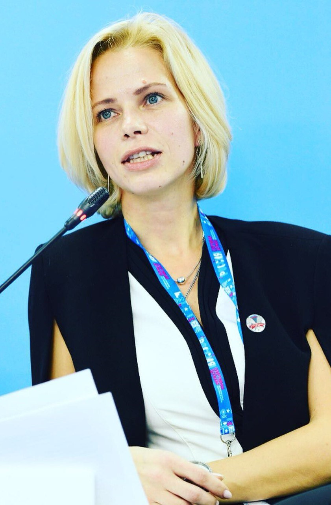

•Участие и содействие в организации различных соревнований по сквошу
•Популяризация сквоша в Нижнем Новогроде
•Развитие юнешеского сквоша
•Содействие юниорам в выступлении на всеросийских и международных турнирах
•Привлечение молодежи к регулярным тренировкам по сквоша
•Оказание финансовой поддержки проектам по развитию сквоша
•Пропаганда достижений отечественного спорта
 Николаенко Мария Евгеньевна - президент федерации сквоша Нижегородской области с 2014года. За последние 9 лет, федерацией было проведено более 30 турниров, включая такие турниры как: Юниорская серия и Russian junior open. Особое внимание было уделено спортивным разрядам федерацией было выданно 3кмс и 7 первых взрослых.